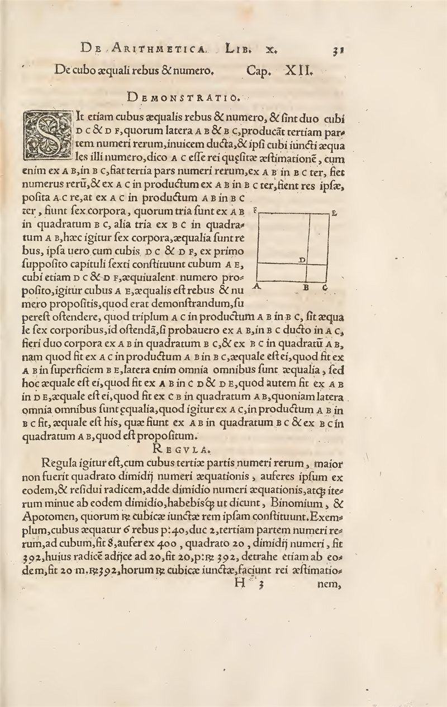
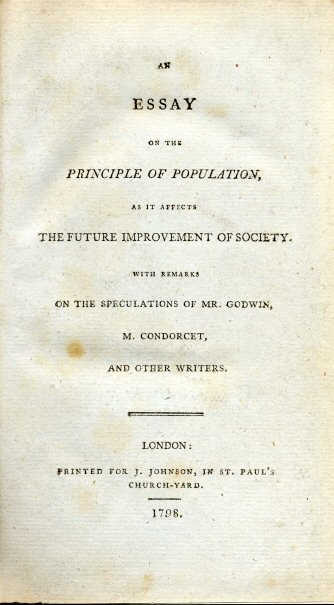
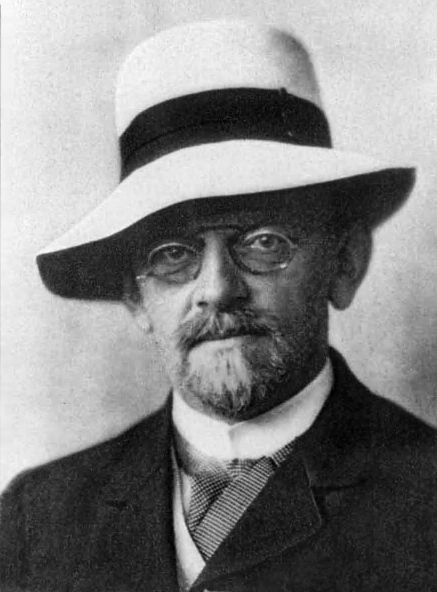
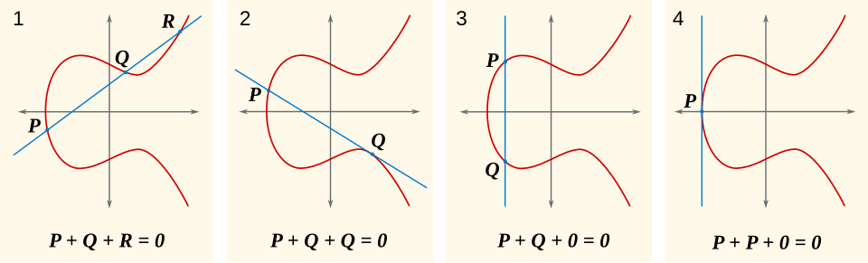
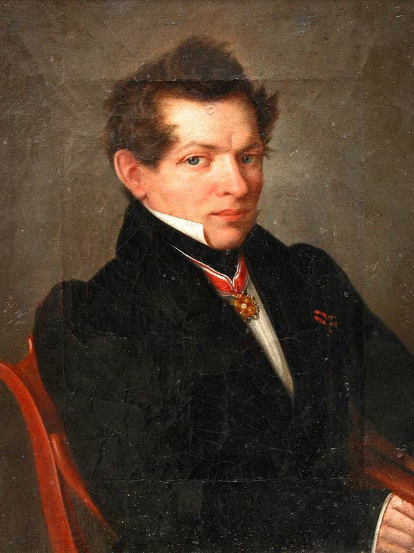
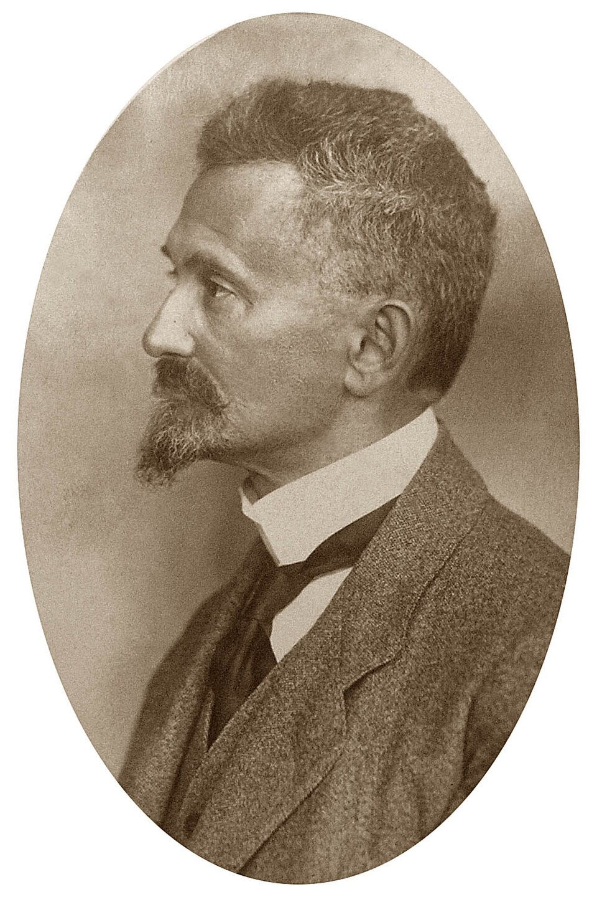
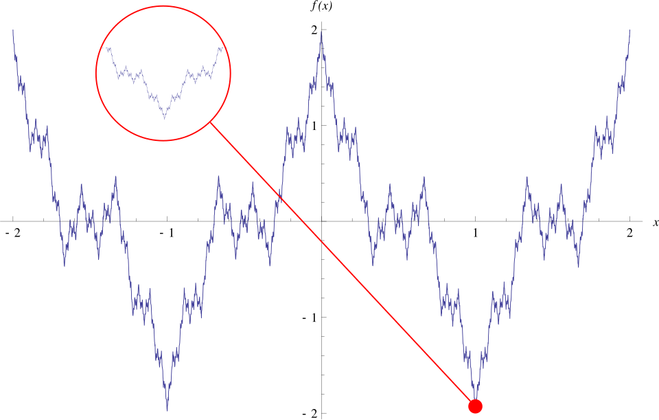
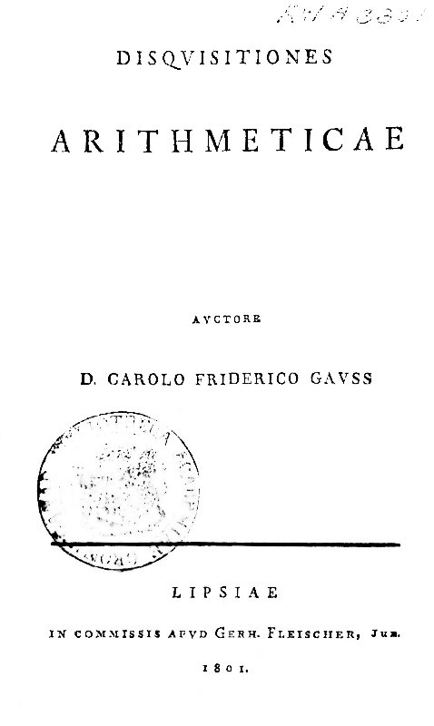
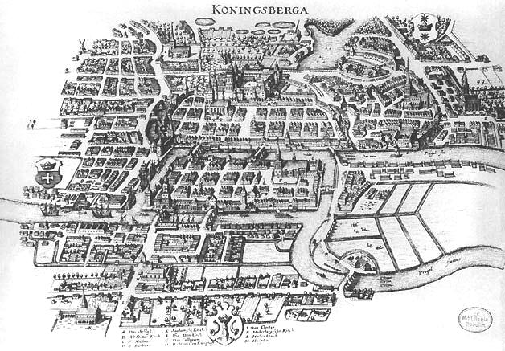
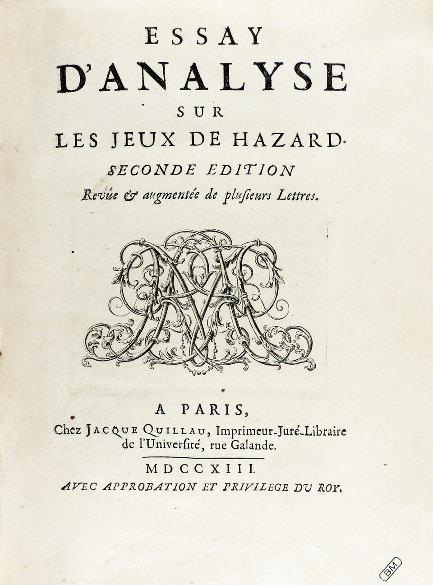

About this edition
The Advanced Edition covers the same twenty fields as the children's site, written for adults and advanced students. Each field is a self-contained course: an overview, a sequence of lessons with full proofs and worked examples, a problem set, and an assessment whose questions are generated afresh on every attempt.
Choose a field from the four groups below.
Work through the lessons in order; each builds on the previous ones.
Attempt the exercises before opening their solutions.
Finish with the problem set and the assessment.
Foundations
Number systems, rational numbers and mathematical logic.
 Arithmetic
Arithmetic from the Peano axioms to ℤ, ℚ, ℝ, ℤ/nℤ, IEEE 754 floating point and O(n log n) multiplication.
Arithmetic
Arithmetic from the Peano axioms to ℤ, ℚ, ℝ, ℤ/nℤ, IEEE 754 floating point and O(n log n) multiplication.
 Fractions
Fields of fractions, p-adic valuations, periodic expansions, Farey sequences, continued fractions and approximation.
Logic
Graduate mathematical logic: completeness, compactness, computability, incompleteness, NP-completeness and ZFC.
Fractions
Fields of fractions, p-adic valuations, periodic expansions, Farey sequences, continued fractions and approximation.
Logic
Graduate mathematical logic: completeness, compactness, computability, incompleteness, NP-completeness and ZFC.
Algebra
Equations, linear maps, logarithms, exponential models and binomial coefficients.

Algebraic Equations Theory of equations: elimination, polynomial rings, Cardano and Ferrari, resultants, Galois theory and Newton's method. Linear Functions
Linear and affine maps from rank–nullity and duality to least squares, Gauss–Markov, linear programming and ReLUs.
Linear Functions
Linear and affine maps from rank–nullity and duality to least squares, Gauss–Markov, linear programming and ReLUs.
 Logarithms
The logarithm from ∫dt/t to the complex plane: rigorous foundations, series, entropy, primes and discrete logs.
Logarithms
The logarithm from ∫dt/t to the complex plane: rigorous foundations, series, entropy, primes and discrete logs.

Exponential Growth Exponential laws from y′ = ky to matrix exponentials, logistic and epidemic models, branching and growth of groups. Pascal's Triangle
Binomial coefficients at graduate level: identities, Newton's series, Lucas, Kummer, q-analogues, Catalan, asymptotics.
Pascal's Triangle
Binomial coefficients at graduate level: identities, Newton's series, Lucas, Kummer, q-analogues, Catalan, asymptotics.
Geometry
Euclidean, algebraic, non-Euclidean and fractal geometry.

Geometry Euclidean geometry: axioms, isometries, triangle centres, inversion, projective ideas, polytopes, constructibility.
Algebraic Geometry Varieties, ideals and the Nullstellensatz, projective curves, Bézout's theorem, elliptic curves, genus and schemes.
Non-Euclidean Geometry Neutral, spherical and hyperbolic geometry: models, PSL(2,ℝ), trigonometry, Fuchsian groups and Gauss–Bonnet.
Fractal Geometry Hausdorff measure and dimension, iterated function systems, Julia and Mandelbrot sets, chaos and multifractals.Advanced
Analysis, linear algebra, number theory, trigonometry, combinatorics and probability.

Calculus Real analysis from the completeness of ℝ to the Lebesgue integral, with multivariable calculus and full proofs. Complex Analysis
Holomorphic functions, Cauchy's theorem, residues, conformal maps and the analytic continuation of ζ(s).
Complex Analysis
Holomorphic functions, Cauchy's theorem, residues, conformal maps and the analytic continuation of ζ(s).
 Matrix Math
A graduate course in linear algebra: determinants, Jordan form, the spectral theorem, SVD and conditioning.
Matrix Math
A graduate course in linear algebra: determinants, Jordan form, the spectral theorem, SVD and conditioning.

Number Theory Congruences, primitive roots, quadratic reciprocity, arithmetic functions, the primes, Pell's equation and RSA. Trigonometry Sine and cosine built from power series: π, inverse branches, spherical trigonometry, Chebyshev, Fourier and Niven.
Combinatorics Enumeration: generating functions, Stirling, partition and Catalan numbers, symmetry, Ramsey theory.
Permutations vs Combinations The symmetric group, sign, cycle structure, derangements, multisets, Gray codes, group actions and random permutations. Probability
Measure-theoretic probability: limit theorems, martingales, Markov chains and Poisson processes.
Probability
Measure-theoretic probability: limit theorems, martingales, Markov chains and Poisson processes.